คู่มือพนักงาน · สำหรับพนักงานทุกคน
เช็คอินเข้างาน และงานประจำวัน
คู่มือนี้สำหรับพนักงานทุกคน — แม่บ้าน ช่าง และพนักงานทั่วไป ใช้บนมือถือได้เลย
ครอบคลุมการเข้าสู่ระบบ การลงเวลาเข้า-ออกงานด้วย QR การดูรายการงานของคุณ การลาและสลับวันหยุด
และการเปลี่ยนรหัสผ่าน
สิ่งที่คุณเห็นบนหน้าจอขึ้นอยู่กับหน้าที่ของคุณ —
ถ้ามีหน้าจอเตือนสีแดงเด้งขึ้นทันทีหลังเข้าสู่ระบบ ให้ข้ามไปอ่านหัวข้อ 7ก่อน
เปิดหน้าเว็บของระบบบนมือถือ แล้วกรอกชื่อผู้ใช้และรหัสผ่านที่ได้รับจากผู้จัดการ
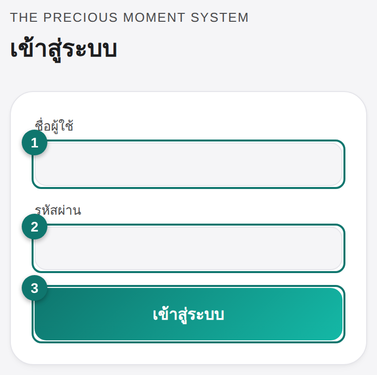
- กรอกชื่อผู้ใช้ ของคุณ
- กรอกรหัสผ่าน
- กดปุ่ม เข้าสู่ระบบ
ระบบจะจำคุณไว้บนเครื่องนี้ ครั้งต่อไปที่เปิดหน้าเว็บ คุณจะเข้าหน้าหลักได้เลยโดยไม่ต้องล็อกอินใหม่
ถ้าชื่อผู้ใช้หรือรหัสผ่านไม่ถูกต้อง จะมีข้อความสีแดงแจ้งเตือน — ลองพิมพ์ใหม่ให้ถูกต้อง
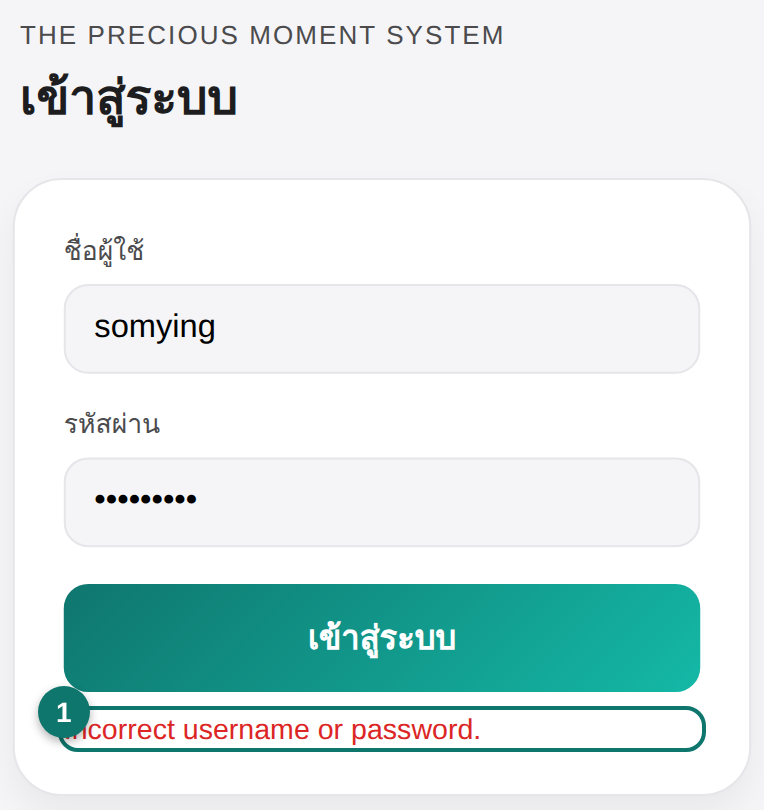
เมื่อข้อมูลไม่ถูกต้อง ระบบจะแจ้งเป็นข้อความสีแดง
2
ลงเวลาเข้า-ออกงานCheck in / Check out
ทุกวันเมื่อมาถึงที่ทำงาน ให้สแกน QR codeที่ติดไว้ที่ออฟฟิศเพื่อลงเวลา
ระบบจะตรวจตำแหน่ง GPS ว่าคุณอยู่ในบริเวณออฟฟิศจริง
สถานะวันนี้
ด้านบนของการ์ดจะบอกสถานะของวันนี้ ถ้ายังไม่ได้ลงเวลา จะขึ้นข้อความสีแดงและปุ่มเปิดกล้อง
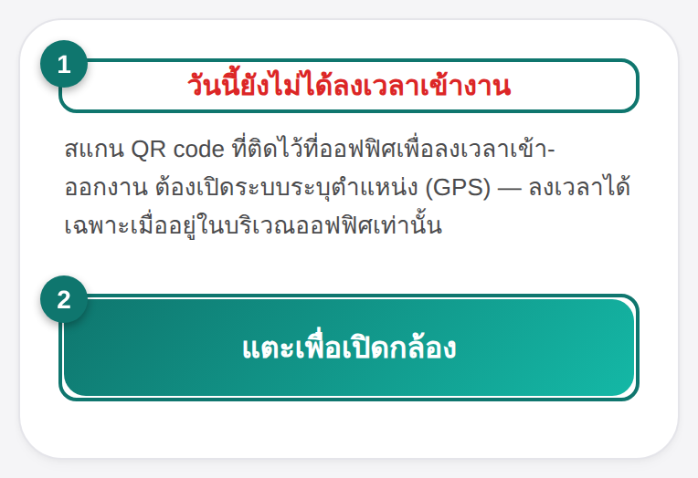
- ข้อความ “วันนี้ยังไม่ได้ลงเวลาเข้างาน” = วันนี้ยังไม่ได้ลงเวลา
- กดปุ่ม แตะเพื่อเปิดกล้อง
สแกน QR แล้วยืนยัน
เมื่อเปิดกล้อง ให้เล็งไปที่ QR code ที่ออฟฟิศ ระบบจะขอตำแหน่ง GPS แล้วแสดงหน้ายืนยัน
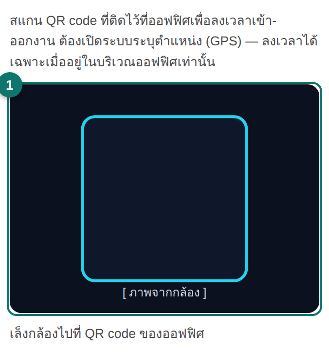
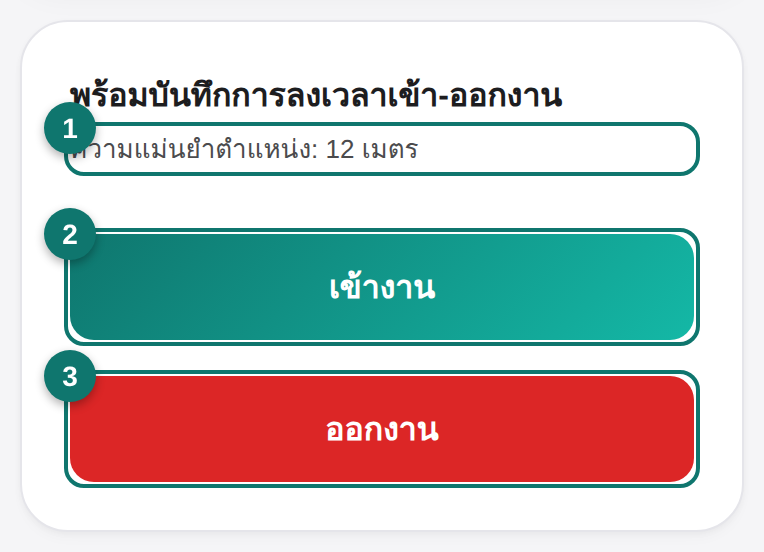
- เล็งกล้องไปที่ QR code ที่ติดอยู่ที่ออฟฟิศ
- ระบบแสดง ความแม่นยำตำแหน่ง — ยืนยันว่าคุณอยู่ที่ออฟฟิศ
- ตอนเริ่มงาน กด เข้างาน (สีเขียว) · ตอนเลิกงาน กด ออกงาน (สีแดง)
เลือกปุ่มเอง — ตอนมาถึงกด เข้างาน, ตอนกลับกด ออกงาน เมื่อสำเร็จ สถานะด้านบนจะเปลี่ยนเป็นสีเขียว “✅ ลงเวลาเข้างานแล้ววันนี้”
ถ้ากล้องใช้ไม่ได้
ถ้ากล้องเปิดไม่ได้ หรือคุณไม่อนุญาตให้ใช้กล้อง ระบบจะให้กรอกรหัสออฟฟิศแทน (รหัสอยู่ใต้ป้าย QR)
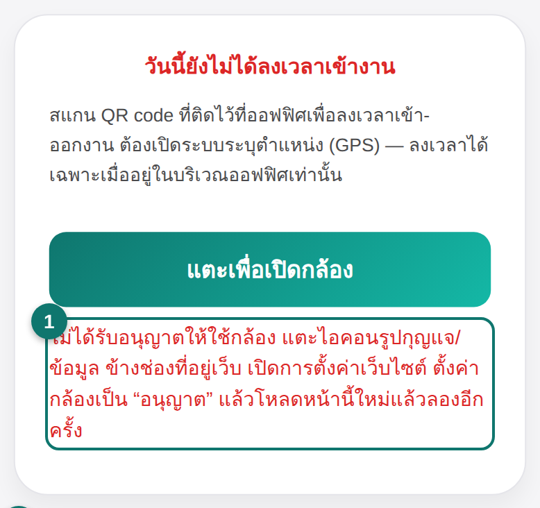
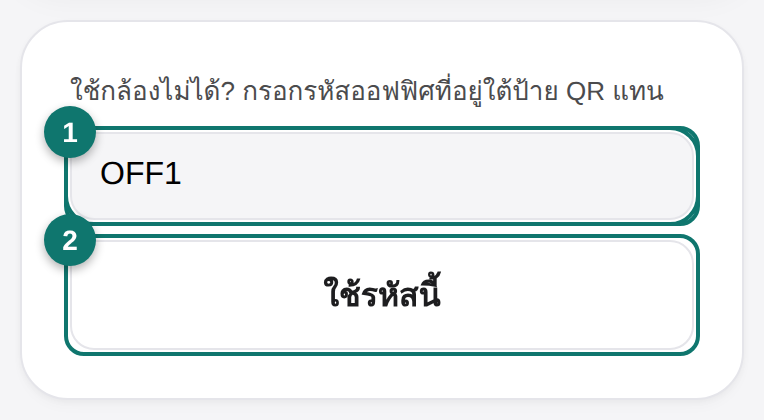
- ถ้ากล้องถูกปฏิเสธ ระบบจะขึ้นวิธีเปิดสิทธิ์กล้อง และแสดงช่องกรอกรหัสให้
- พิมพ์ รหัสออฟฟิศ (เช่น OFF1) แล้วกด ใช้รหัสนี้
ต้องอยู่ในบริเวณออฟฟิศ
ถ้าคุณอยู่ไกลเกินไปจากออฟฟิศ ระบบจะไม่ให้ลงเวลา และแจ้งระยะห่าง — ต้องเข้ามาใกล้ออฟฟิศก่อนแล้วสแกนใหม่
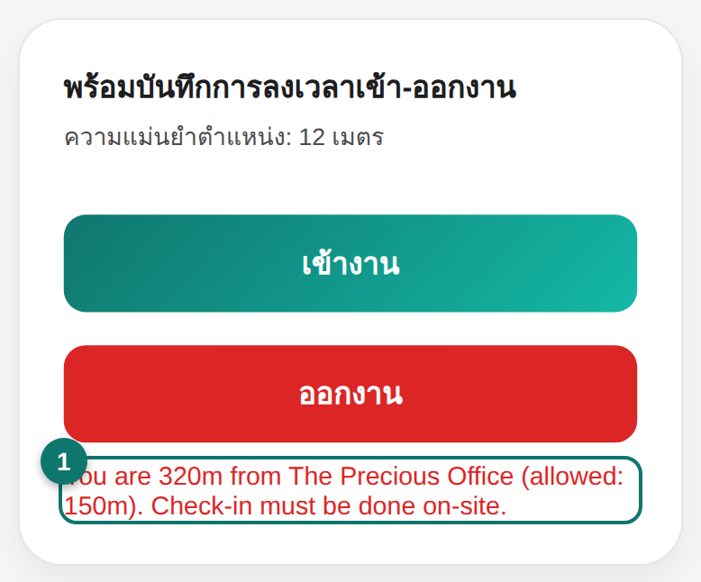
ตัวอย่าง: อยู่ห่างออฟฟิศ 320 เมตร (อนุญาต 150 เมตร) — ลงเวลาไม่ได้
ออกงานด้วยปุ่มเดียว
เมื่อคุณลงเวลาเข้างานแล้ว ตอนเลิกงานไม่ต้องสแกนอีก — มีปุ่มออกงานปุ่มเดียวให้กดได้เลย
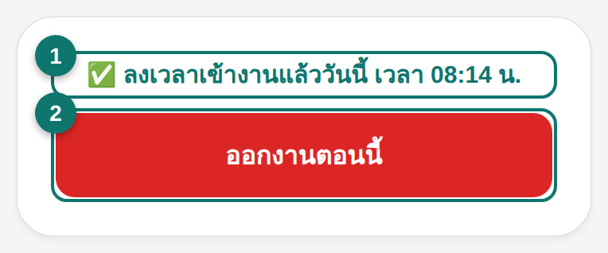
- สถานะสีเขียว “✅ ลงเวลาเข้างานแล้ววันนี้ เวลา …” = ลงเวลาเข้างานเรียบร้อย
- ตอนเลิกงาน กด ออกงานตอนนี้ ระบบจะเช็กตำแหน่งแล้วบันทึกให้อัตโนมัติ
การ์ด รายการงาน แสดงงานที่คุณต้องทำ แบ่งตามวัน (วันนี้ / พรุ่งนี้ / ฯลฯ)
และแบ่งตามตึก (Precious / Moment) งานที่ค้าง/เลยกำหนดจะอยู่บนสุดเป็นสีแดง
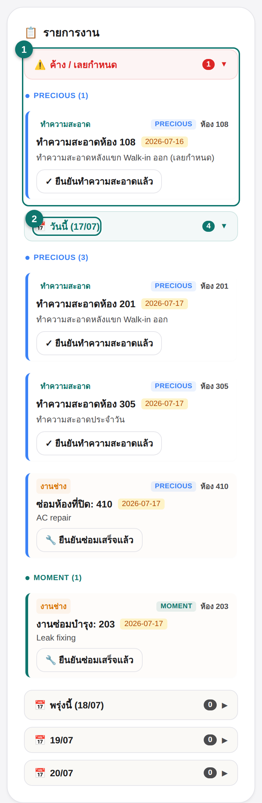
- แถบสีแดง ค้าง / เลยกำหนด = งานที่ค้างหรือเลยกำหนด ต้องรีบทำ
- แถบ วันนี้ = งานของวันนี้ (เปิดอยู่แล้ว) แตะหัวข้อวันอื่นเพื่อดูงานล่วงหน้า
แต่ละงานจะมีป้ายบอกประเภท: ทำความสะอาด งานแม่บ้าน หรือ
งานช่าง งานซ่อมบำรุง พร้อมเลขห้องและตึก เมื่อทำเสร็จให้กดปุ่มยืนยัน
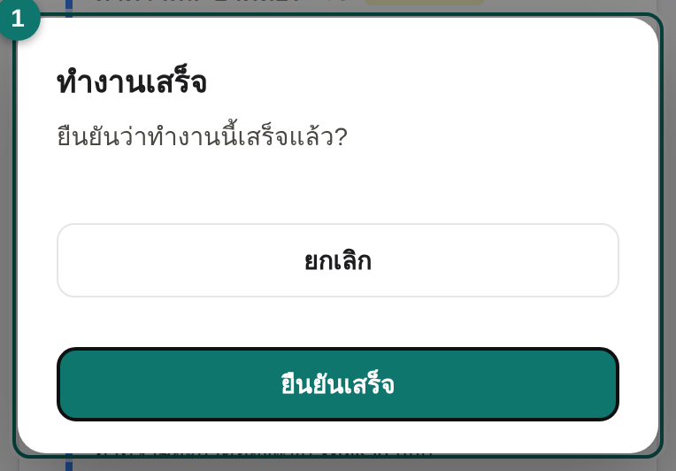
- งานทำความสะอาด กด ✓ ยืนยันทำความสะอาดแล้ว · งานช่าง กด 🔧 ยืนยันซ่อมเสร็จแล้ว แล้วกด ยืนยันเสร็จ อีกครั้ง
ถ้าฉันมีหลายหน้าที่?
คุณอาจได้รับมอบหมายมากกว่าหนึ่งหน้าที่ ระบบจะรวมงานทุกหน้าที่ของคุณมาแสดงในรายการเดียว
ตัวอย่างในภาพด้านบน พนักงานคนนี้เป็นทั้งแม่บ้านตึก Precious และช่าง —
จึงเห็นงานทำความสะอาดของ Precious และงานช่างของทั้งสองตึก แต่ไม่เห็นงานทำความสะอาดของ Moment
| หน้าที่ของคุณ | งานที่คุณจะเห็น |
|---|
| แม่บ้าน — Precious housekeeping_precious | งานทำความสะอาดของตึก Precious เท่านั้น |
| แม่บ้าน — Moment housekeeping_moment | งานทำความสะอาดของตึก Moment เท่านั้น |
| แม่บ้าน — ทั้งสองตึก housekeeping | งานทำความสะอาดของทั้งสองตึก |
| ช่าง technician | งานช่าง/ซ่อมบำรุง และห้องปิดซ่อม ของทุกตึก |
ถ้าคุณมีหลายหน้าที่ งานจะรวมกัน เช่น แม่บ้าน Precious + ช่าง = เห็นทั้งงานทำความสะอาด Precious และงานช่างทุกตึก
ถ้าไม่มีงานเลย การ์ดจะขึ้นว่า “ไม่มีงานค้าง”
4
บัญชีของฉันMy account · leave, swap, password
กดเมนู บัญชีของฉัน เพื่อดูคำขอของคุณ ขอลา สลับวันหยุด และเปลี่ยนรหัสผ่าน
คำขอของฉันและวันลาคงเหลือ
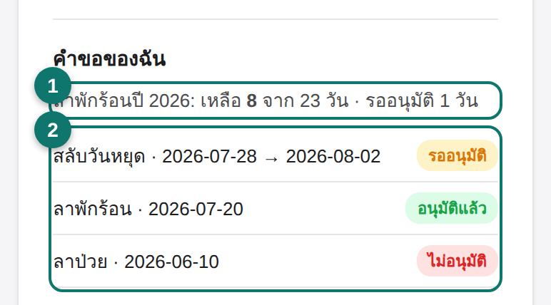
- บรรทัด ลาพักร้อนปี … บอกวันลาพักร้อนคงเหลือของปีนี้
- รายการด้านล่างคือคำขอที่ผ่านมา พร้อมสถานะ: อนุมัติแล้ว · ไม่อนุมัติ · รออนุมัติ
ขอลา (ลาพักร้อน / ลาป่วย)
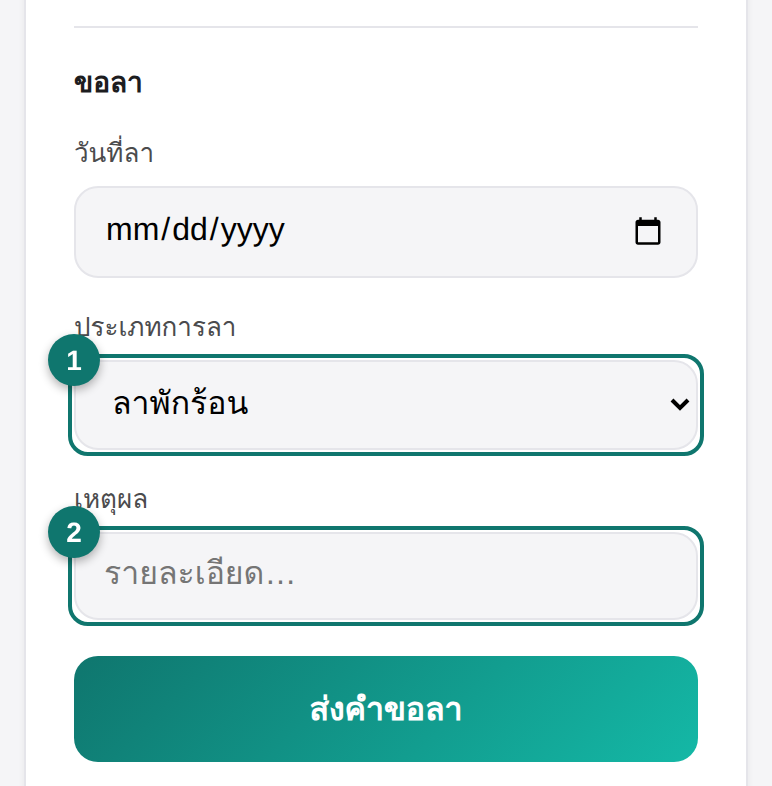
- เลือกประเภทการลา: ลาพักร้อน หรือ ลาป่วย แล้วเลือกวันที่และกรอกเหตุผล
- กด ส่งคำขอลา คำขอจะไปรออนุมัติ ดูสถานะได้ที่ “คำขอของฉัน” ด้านบน
ข้อควรรู้: การลาพักร้อนกระชั้นชิด (น้อยกว่า 2 วัน) ต้องให้หัวหน้า/พนักงานต้อนรับ (frontdesk) เป็นผู้ยื่นให้แทน · การลาป่วยจะนับเป็นวันลาที่ได้รับค่าจ้างต่อเมื่อมีใบรับรองแพทย์ที่ผู้จัดการตรวจแล้ว
สลับวันหยุด และเปลี่ยนรหัสผ่าน
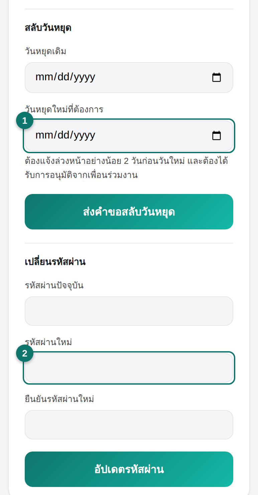
- สลับวันหยุด: เลือกวันหยุดเดิมและวันใหม่ — ต้องแจ้งล่วงหน้าอย่างน้อย 2 วัน และรออนุมัติ
- เปลี่ยนรหัสผ่าน: กรอกรหัสเดิม รหัสใหม่ และยืนยันรหัสใหม่ แล้วกด อัปเดตรหัสผ่าน
5
บิลค่าไฟ-ค่าน้ำMonthly government bills
การ์ดนี้แสดงค่าไฟ ค่าน้ำ และค่าบำบัดน้ำเสียย้อนหลัง 6 เดือน เพื่อให้ทุกคนช่วยกันประหยัด
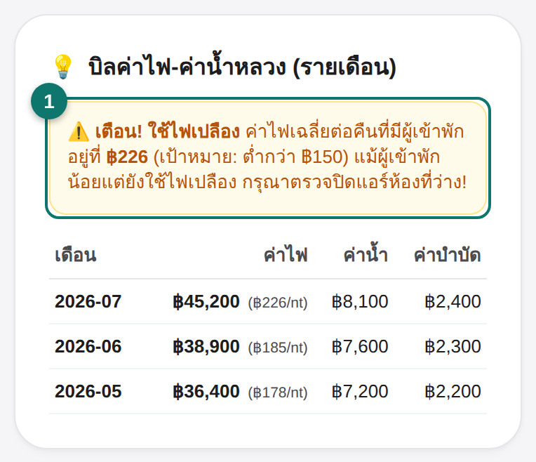
- ถ้าค่าไฟต่อคืนสูงเกินเป้า จะมีแถบเตือนสีเหลือง — ช่วยกันปิดแอร์ห้องที่ไม่มีคนพัก
การ์ดนี้ทุกคนเห็น ไม่ต้องทำอะไร เป็นข้อมูลให้ช่วยกันดูแลการใช้ไฟ-น้ำ
6
การแจ้งเตือนและเมนูNotifications & menu
เมื่อทำรายการต่าง ๆ ระบบจะเด้งข้อความแจ้งเตือนเล็ก ๆ (สีเขียว = สำเร็จ, สีแดง = ผิดพลาด) ที่หายไปเอง
สำหรับพนักงานทั่วไป เมนูด้านบนจะมีแค่ 📖 คู่มือ, บัญชีของฉัน และปุ่ม ออกจากระบบ — เมนูอื่น ๆ
(ห้องพัก, การเงิน ฯลฯ) จะไม่ขึ้น เพราะเป็นของหน้าที่อื่น ไม่ใช่ว่าหายหรือเสีย
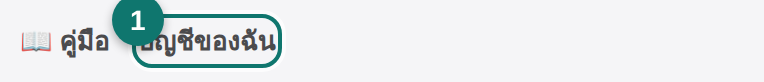
เมนูของพนักงานทั่วไป — มีคู่มือ บัญชีของฉัน และออกจากระบบ
7
หน้าจอรายงานข้อผิดพลาดWarning notice
ถ้าผู้จัดการบันทึกข้อผิดพลาด/ข้อร้องเรียนที่เกี่ยวกับคุณ จะมีหน้าจอสีแดงเต็มจอเด้งขึ้น
ทันทีหลังเข้าสู่ระบบ และจะบังทุกอย่างจนกว่าคุณจะกดรับทราบ
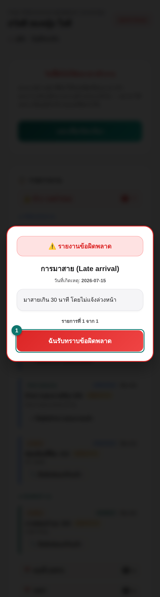
- อ่านหัวข้อ วันที่ และรายละเอียดให้ครบ (อาจมีรูปประกอบ)
- กดปุ่มสีแดง “ฉันรับทราบข้อผิดพลาด” เพื่อรับทราบ แล้วจึงใช้งานต่อได้
หมายเหตุ: หน้าจอนี้ไม่มีปุ่มปิด/ข้าม ต้องกดรับทราบก่อนเท่านั้น ถ้ามีหลายรายการ จะให้รับทราบทีละรายการ